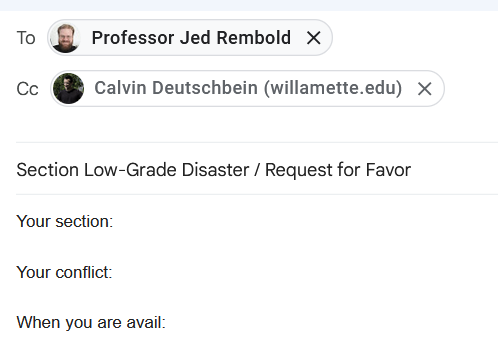

Range
W3Wed: 10 Sep
Announcements
- By MONDAY 11:59 PM: "Problem Set 2: Checkers" assignment.
- One Karel problem (probably) using "if" and "while"
- One Python problem using arithmetic and (probably) "for"
- One writing problem.
- Sections reminder: Wed & Thurs PM.
- Problems: email jjrembold@, you may cc ckdeutschbein@
 - PS1: Crushed. Mission: All A's is a go! 🚀
Today
range()
and / or / not
def / return
range()

The Anapurna range of the Himalayas (that mountain is ~5 miles tall)
range()
- Remember this:
def turn_right(): for i in range(3): turn_left() - Like the Anapurna range (look it was just a cool picture okay) of the Himalayas...
- A range of some integer n is part of the number line (from neg to pos infinity)
- In Karel we didn't worry about the numbers, but we are Arithmetic Appreciators™ now
range()
- The easiest way to examine range() is with print()
print(range(10)) - We see:
range(0, 10) - Um... what?
- Okay fun fact - range just starts at zero by default, but we can change that...
print(range(5,10)) - We see:
range(5, 10)
range()
- The easiest way to examine range() is with print()...
- But we shouldn't just print the range itself!
- We often use 'range()' with 'for'
for i in range(3): # smaller so its easy to work with print(i) - We see:
0 1 2 - Recall: we say "range(3)" but we get "range(0,3)"
- So ranges include the first number and stop right before the second.
- Why include zero?
- What is the first hour of the day? (12hr or 24hr clock?)
- What is the fewest number of apples you can have?
range()
- The easiest way to examine range() is with print()...
for i in range(4,6): print(i) - We see:
4 5 - We can also do non-zero starts.
range()
- Often we use for and range when we want to check for something, like multiples of 5.
for i in range(25,50): if i % 5 == 0: print(i) - We see:
25 30 35 40 45 - One can imagine how this may be useful
- Check every 50th entry to see if it seems valid.
- Divide up some tasks among n people.
range()
- There is a forbidden (it's not forbidden) third value that can be supplied to a range, that we usually call the step size:
for i in range(25,50,10): print(i) - We see:
25 35 45 - I use this sometimes, but usually inner if is fine, unless...
range()
- By the way you can make any of these values negative.
>>> for i in range(15,10,-2): ... print(i) ... 15 13 11 - For whatever reason, I'm always reversing orders:
- Review the homeworks that were turned in last, first
- Use reverse alphabetical order to offset years of alphabetization
- In a big file: start reading from the end (latest entries)
range()
- I like range...
for i in range(15,10,-2): print(i) - ... but also like while:
i = 15 while i > 10: print(i) i = i - 2 - These are identical. Use what you like.
- You will need* to use on PS2 Problem 2.
- There is a very challenging way to use only 'if'
- I don't have it working yet but it looks possible. Office hours.
Today
✓: range()
and / or / not
def / return
Booleans
- There's these things called booleans.
>>> type(1) <class 'int'>>>> type(1.0) <class 'float'>>>> type(1==1.0) <class 'bool'> >>> type(False)<class 'bool'> - 'True' and 'False' are booleans and nothing else is a boolean.
Booleans
|
>>> a = True
>>> b = False
>>> a and b
False
>>> a or b
True
>>> not a
False |
In general: if you aren't sure, just check.
Truthiness
|
>>> if 0:
... print('hi')
...
>>> if "":
... print('hi')
...
>>> if print():
... print('hi')
...
>>> if .1:
... print('hi')
...
hi
>>> bool(0)
False |
In general: if you aren't sure, just check.
Truthiness
|
>>> for i in range(10,20):
... if i % 3 == 0:
... print(i)
... if not i % 3:
... print(i)
...
12
12
15
15
18
18
>>> |
All together
- Same as:
>>> for i in range(50): ... if i % 3 == 0 and i % 5 == 0: ... print(i)
>>> for i in range(0,50,5):
... if not i % 3:
... print(i)
...
0
15
30
45
>>>
I took a whole class in undergrad on "counting two ways" (it was fun!)
Disambiguate
- If you get confused looking at something:
>>> for i in range(50): ... if i % 3 == 0 and i % 5 == 0: ... print(i) - Add parenthesis:
>>> for i in range(50): ... if ((i % 3) == 0) and ((i % 5) == 0): ... print(i) - Or use variables.
>>> for i in range(50): ... rem3 = (i % 3) rem5 = (i % 5) if not rem3 and not rem5: # 'not' any remainder, ... print(i)
Today
✓: range()
✓: and / or / not
def / return
Exercise
- Do "Problem Set 2: Checkers"
- One Karel problem (probably) using "if" and "while"
def check_move(): if no_beepers_present(): move() put_beeper() else: move() - One Python problem using arithmetic and (probably) "for"
def divisible_by_six_or_seven(x:int, y:int) -> int: # there must be the possibility of something printing in here return # must return an int - One writing problem
- One Karel problem (probably) using "if" and "while"
Announcements
- By MONDAY 11:59 PM: "Problem Set 2: Checkers" assignment.
- One Karel problem (probably) using "if" and "while"
- One Python problem using arithmetic and (probably) "for"
- One writing problem.
- Sections reminder: Wed & Thurs PM.
- Problems: email jjrembold@, you may cc ckdeutschbein@
- PS1: Crushed. Mission: All A's is a go! 🚀